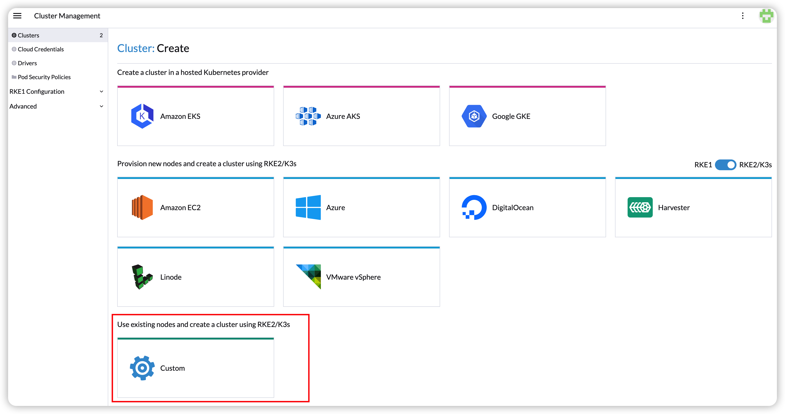
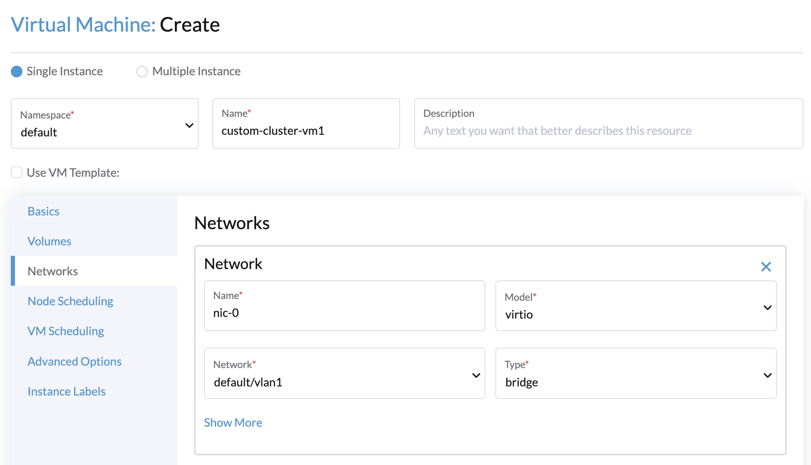
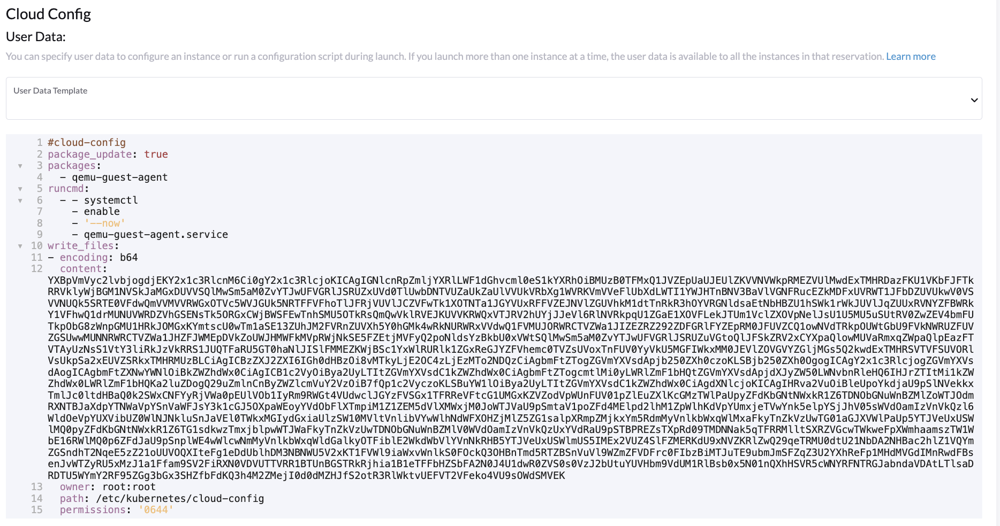
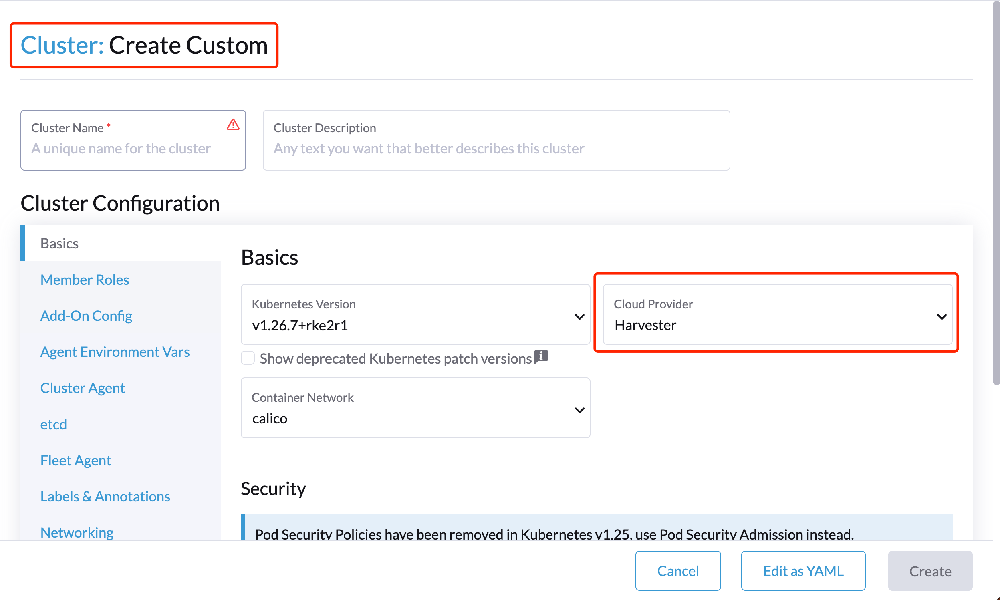
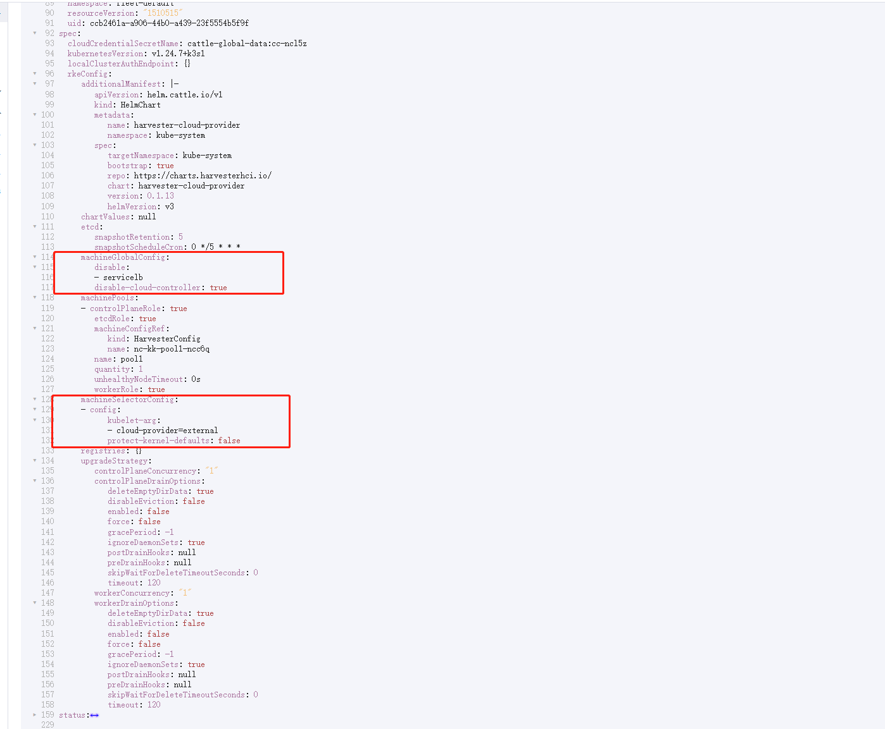

|
Este documento ha sido traducido utilizando tecnología de traducción automática. Si bien nos esforzamos por proporcionar traducciones precisas, no ofrecemos garantías sobre la integridad, precisión o confiabilidad del contenido traducido. En caso de discrepancia, la versión original en inglés prevalecerá y constituirá el texto autorizado. |
Proveedor de nube Harvester
Puedes aprovisionar clústeres RKE2 en Rancher utilizando el controlador de nodo Harvester integrado. Harvester proporciona soporte para balanceador de carga y passthrough de almacenamiento en el clúster de Kubernetes invitado.
Aviso de Compatibilidad Inversa
|
Ten en cuenta un problema conocido de compatibilidad inversa si estás utilizando la versión v0.2.2 o superior del proveedor de nube Harvester. Si tu versión de Harvester es inferior a v1.2.0 y pretendes utilizar versiones más nuevas de RKE2 (es decir, >= Para una matriz de soporte detallada, consulta la sección Controlador CCM y CSI de Harvester con lanzamientos de RKE2 en el sitio web oficial sitio web. |
Desplegando
Requisitos previos
-
El clúster de Kubernetes se construye sobre máquinas virtuales Harvester.
-
Las máquinas virtuales Harvester que funcionan como nodos de Kubernetes invitados están en el mismo espacio de nombres.
-
Los nombres de host de las máquinas virtuales invitadas de Harvester coinciden con los nombres de sus correspondientes máquinas virtuales Harvester. Las máquinas virtuales Harvester del clúster invitado no pueden tener nombres de host diferentes a los de sus nombres de máquina virtual Harvester al utilizar el controlador CSI de Harvester. Esperamos eliminar esta limitación en una futura versión de Harvester.
|
Cada máquina virtual Harvester debe tener el Para comprobar si el módulo del núcleo está disponible, accede a la máquina virtual y ejecuta los siguientes comandos: Es probable que falte el módulo del kernel si ocurren las siguientes situaciones:
Por defecto, el módulo del kernel Para eliminar la necesidad de intervención manual después de que se aprovisione el clúster de invitados, construye tus propias imágenes en la nube utilizando el Servicio de Construcción de openSUSE (OBS). Debes eliminar el paquete |
Desplegando en el Clúster RKE2 con el Controlador de Nodo Harvester
Al crear un clúster RKE2 utilizando el controlador de nodo Harvester, selecciona el proveedor de nube Harvester. El controlador de nodo ayudará a desplegar automáticamente tanto el controlador CSI como el CCM.

A partir de Rancher v2.9.0, puedes configurar una carpeta específica para los datos de configuración de la nube utilizando el campo Ruta de configuración del directorio de datos.

Despliegue Manual en el Clúster RKE2
-
Genera datos de configuración de la nube utilizando el script
generate_addon.sh, y luego coloca los datos en cada nodo personalizado (directorio:/etc/kubernetes/cloud-config).curl -sfL https://raw.githubusercontent.com/harvester/cloud-provider-harvester/master/deploy/generate_addon.sh | bash -s <serviceaccount name> <namespace>El script depende de
kubectlyjqal operar el clúster Harvester, y funciona solo cuando se le da acceso al archivo kubeconfigHarvester Cluster.Puedes encontrar el archivo
kubeconfigen uno de los nodos de gestión de Harvester en la vía/etc/rancher/rke2/rke2.yaml. La IP del servidor debe ser reemplazada por la dirección VIP.Ejemplo de contenido:
apiVersion: v1 clusters: - cluster: certificate-authority-data: <redacted> server: https://127.0.0.1:6443 name: default # ...Debes especificar el espacio de nombres en el que se creará el clúster de invitados.
Ejemplo de salida:
########## cloud config ############ apiVersion: v1 clusters: - cluster: certificate-authority-data: <CACERT> server: https://HARVESTER-ENDPOINT/k8s/clusters/local name: local contexts: - context: cluster: local namespace: default user: harvester-cloud-provider-default-local name: harvester-cloud-provider-default-local current-context: harvester-cloud-provider-default-local kind: Config preferences: {} users: - name: harvester-cloud-provider-default-local user: token: <TOKEN> ########## cloud-init user data ############ write_files: - encoding: b64 content: <CONTENT> owner: root:root path: /etc/kubernetes/cloud-config permissions: '0644' -
En la página de creación del clúster RKE2, ve a la pantalla Configuración del Clúster y establece el valor de Proveedor de Nube en Externo.

-
Copia y pega el contenido
cloud-init user dataen Grupos de Máquinas > Mostrar Avanzado > Datos del Usuario.
-
Añade el CRD
HelmChartparaharvester-cloud-providera Configuración del Clúster > Configuración de Complementos > Manifiesto Adicional.Debes reemplazar
<cluster-name>con el nombre de tu clúster.apiVersion: helm.cattle.io/v1 kind: HelmChart metadata: name: harvester-cloud-provider namespace: kube-system spec: targetNamespace: kube-system bootstrap: true repo: https://raw.githubusercontent.com/rancher/charts/dev-v2.9 chart: harvester-cloud-provider version: 104.0.2+up0.2.6 helmVersion: v3 valuesContent: |- global: cattle: clusterName: <cluster-name>
-
Para crear el balanceador de carga, añade la anotación
cloudprovider.harvesterhci.io/ipam: <dhcp|pool>.
Desplegando en el clúster personalizado RKE2 (experimental)

-
Genera datos de configuración de la nube utilizando el script
generate_addon.sh, y luego coloca los datos en cada nodo personalizado (directorio:/etc/kubernetes/cloud-config).curl -sfL https://raw.githubusercontent.com/harvester/cloud-provider-harvester/master/deploy/generate_addon.sh | bash -s <serviceaccount name> <namespace>El script depende de
kubectlyjqal operar el clúster Harvester, y funciona solo cuando se le da acceso al archivo kubeconfigHarvester Cluster.Puedes encontrar el archivo
kubeconfigen uno de los nodos de gestión de Harvester en la vía/etc/rancher/rke2/rke2.yaml. La IP del servidor debe ser reemplazada por la dirección VIP.Ejemplo de contenido:
apiVersion: v1 clusters: - cluster: certificate-authority-data: <redacted> server: https://127.0.0.1:6443 name: default # ...Debes especificar el espacio de nombres en el que se creará el clúster de invitados.
Ejemplo de salida:
########## cloud config ############ apiVersion: v1 clusters: - cluster: certificate-authority-data: <CACERT> server: https://HARVESTER-ENDPOINT/k8s/clusters/local name: local contexts: - context: cluster: local namespace: default user: harvester-cloud-provider-default-local name: harvester-cloud-provider-default-local current-context: harvester-cloud-provider-default-local kind: Config preferences: {} users: - name: harvester-cloud-provider-default-local user: token: <TOKEN> ########## cloud-init user data ############ write_files: - encoding: b64 content: <CONTENT> owner: root:root path: /etc/kubernetes/cloud-config permissions: '0644' -
Crea una VM en el clúster de Harvester con la siguiente configuración:
-
Conceptos básicos pestaña: Los requisitos mínimos son 2 CPUs y 4 GiB de RAM. El espacio en disco requerido depende de la imagen de la VM.

-
Pestaña Redes: Especifica un nombre de red con el formato
nic-<number>.
-
Pestaña Opciones avanzadas: Copia y pega el contenido de la pantalla Datos de usuario de configuración en la nube.

-
-
En la pestaña Conceptos básicos de la pantalla Configuración del clúster, selecciona Harvester como el Proveedor de nube y luego selecciona Crear para iniciar el clúster.

-
En la pestaña Registro, realiza los pasos necesarios para ejecutar el comando de registro RKE2 en la VM.

Desplegando en el clúster K3s con el controlador de nodo Harvester (experimental)
Al iniciar un clúster K3s utilizando el controlador de nodo de Harvester, puedes realizar los siguientes pasos para desplegar el proveedor de nube de Harvester:
-
Utiliza
generate_addon.shpara generar la configuración de la nube.curl -sfL https://raw.githubusercontent.com/harvester/cloud-provider-harvester/master/deploy/generate_addon.sh | bash -s <serviceaccount name> <namespace>
La salida será la siguiente:
########## cloud config ############ apiVersion: v1 clusters: - cluster: certificate-authority-data: <CACERT> server: https://HARVESTER-ENDPOINT/k8s/clusters/local name: local contexts: - context: cluster: local namespace: default user: harvester-cloud-provider-default-local name: harvester-cloud-provider-default-local current-context: harvester-cloud-provider-default-local kind: Config preferences: {} users: - name: harvester-cloud-provider-default-local user: token: <TOKEN> ########## cloud-init user data ############ write_files: - encoding: b64 content: <CONTENT> owner: root:root path: /etc/kubernetes/cloud-config permissions: '0644' -
Copia y pega el contenido de
cloud-init user dataen Grupos de máquinas > Mostrar avanzado > Datos de usuario. -
Añade el siguiente
HelmChartyaml deharvester-cloud-providera Configuración del clúster > Configuración de complementos > Manifiesto adicional.apiVersion: helm.cattle.io/v1 kind: HelmChart metadata: name: harvester-cloud-provider namespace: kube-system spec: targetNamespace: kube-system bootstrap: true repo: https://charts.harvesterhci.io/ chart: harvester-cloud-provider version: 0.2.2 helmVersion: v3
-
Desactiva el proveedor de nube
in-treede las siguientes maneras:-
Haz clic en el botón
Edit as YAML.
-
Desactivar
servicelby establecerdisable-cloud-controller: truepara desactivar el controlador de nube K3s por defecto.machineGlobalConfig: disable: - servicelb disable-cloud-controller: true -
Añade
cloud-provider=externalpara utilizar el proveedor de nube Harvester.machineSelectorConfig: - config: kubelet-arg: - cloud-provider=external protect-kernel-defaults: false

-
Con estas configuraciones, un clúster K3s debería aprovisionarse correctamente mientras utiliza el proveedor de nube externo.
Actualizar proveedor de nube
Actualizar RKE2
El proveedor de nube se puede actualizar al actualizar la versión de RKE2. Puedes actualizar el clúster RKE2 a través de la interfaz de usuario de Rancher de la siguiente manera:
-
Haz clic en ☰ > Gestión de Clústeres.
-
Encuentra el clúster invitado que deseas actualizar y selecciona ⋮ > Editar Configuración.
-
Selecciona Versión de Kubernetes.
-
Haz clic en Guardar.
Actualizar K3s
Actualizar el proveedor de nube K3s a través de la interfaz de usuario de Rancher, de la siguiente manera:
-
Haz clic en ☰ > Clúster K3s > Aplicaciones > Aplicaciones Instaladas.
-
Encuentra el gráfico del proveedor de nube y selecciona ⋮ > Editar/Actualizar.
-
Selecciona Versión.
-
Haz clic en Siguiente > Actualizar.
|
El proceso de actualización para un clúster invitado de un solo nodo puede detenerse cuando el nuevo Para más información, consulta este comentario del problema de GitHub. Para abordar el problema, elimina manualmente el antiguo pod |
Soporte de Balanceador de Carga
Una vez que hayas desplegado el proveedor de nube Harvester, puedes aprovechar el servicio Kubernetes LoadBalancer para exponer un microservicio dentro del clúster huésped al mundo exterior. Crear un servicio Kubernetes LoadBalancer asigna un balanceador de carga Harvester dedicado al servicio, y puedes hacer ajustes a través del Add-on Config en la interfaz de usuario de Rancher.

IPAM
El balanceador de carga integrado de Harvester ofrece modos tanto DHCP como Pool, y puedes configurarlo añadiendo la anotación cloudprovider.harvesterhci.io/ipam: $mode a su servicio correspondiente. A partir del proveedor de nube Harvester >= v0.2.0, también introduce un modo único Compartir IP. Un servicio comparte su IP de balanceador de carga con otros servicios en este modo.
-
DHCP: Se requiere un servidor DHCP. El balanceador de carga de Harvester solicitará una dirección IP al servidor DHCP.
-
Pool: Primero debes crear un pool de IP utilizando ya sea la SUSE Virtualization interfaz de usuario o la Rancher interfaz de usuario (consulta Mejores prácticas para información sobre las diferencias entre los dos métodos). El controlador de balanceador de carga SUSE Virtualization asignará una IP para el servicio de balanceador de carga siguiendo la directiva de selección de pool de IP.
-
Compartir IP: Al crear un nuevo servicio de balanceador de carga, puedes reutilizar una IP de servicio de balanceador de carga existente. El nuevo servicio se denomina servicio secundario, mientras que el servicio actualmente elegido es el primario. Para especificar el servicio primario en el servicio secundario, puedes añadir la anotación
cloudprovider.harvesterhci.io/primary-service: $primary-service-name. Sin embargo, hay dos limitaciones conocidas:-
Los servicios que comparten la misma dirección IP no pueden usar el mismo puerto.
-
Los servicios secundarios no pueden compartir su IP con servicios adicionales.
-
|
No se permite modificar el modo |
Comprobaciones de actividad
A partir del proveedor de nube Harvester v0.2.0, las comprobaciones de actividad adicionales del servicio LoadBalancer dentro del clúster de Kubernetes huésped ya no son necesarias. En su lugar, puedes configurar sondas de vivacidad y readiness para tus cargas de trabajo. En consecuencia, cualquier pod no disponible será eliminado automáticamente de los puntos finales del equilibrador de carga para lograr el mismo resultado deseado.